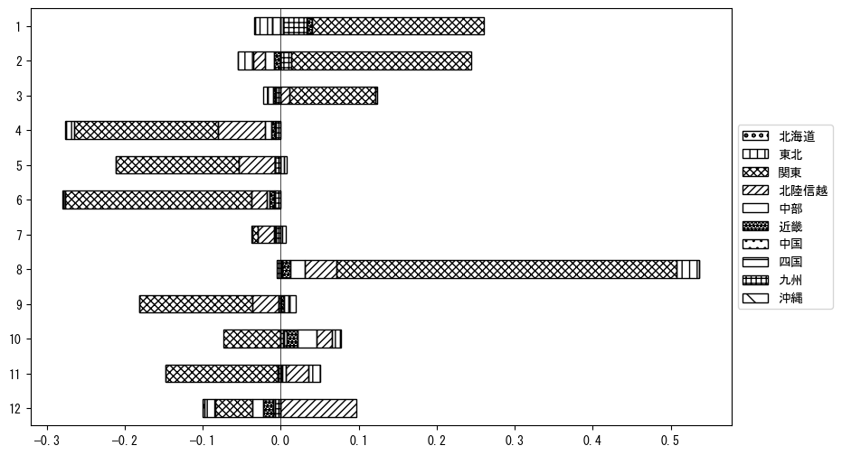

-
トップ
-
新潟県
新潟県
１．延べ宿泊者（総数）の推移
時系列グラフ
図１：新潟県内の従業員数100人以上の宿泊施設での延べ宿泊者数（国外、居住地不詳を含む総数）。
基本統計量
表１：従業員数100人以上の宿泊施設での延べ宿泊者の総数（国外、および居住地不詳を含む）に関する基本統計量。単位は人泊。平均は１か月あたりの平均値を表す。図１に対応。
| 2008年 |
144,999 |
46,676 |
96,563 (4月) |
254,812 (8月) |
| 2009年 |
143,744 |
41,904 |
93,245 (4月) |
243,201 (8月) |
| 2010年 |
126,031 |
38,864 |
85,120 (4月) |
185,050 (2月) |
| 2011年 |
122,299 |
47,715 |
65,868 (4月) |
237,417 (8月) |
| 2012年 |
131,716 |
34,859 |
97,533 (4月) |
226,841 (8月) |
| 2013年 |
101,994 |
19,845 |
84,743 (5月) |
138,533 (8月) |
| 2014年 |
98,652 |
22,834 |
73,121 (9月) |
137,157 (8月) |
| 2015年 |
100,777 |
24,564 |
61,219 (4月) |
135,161 (8月) |
| 2016年 |
113,262 |
23,527 |
84,375 (6月) |
154,565 (8月) |
| 2017年 |
123,734 |
41,013 |
79,028 (6月) |
228,316 (8月) |
| 2018年 |
135,137 |
44,831 |
77,960 (6月) |
216,863 (8月) |
| 2019年 |
128,562 |
50,570 |
80,666 (6月) |
226,064 (1月) |
| 2020年 |
72,503 |
59,414 |
11,829 (5月) |
215,492 (1月) |
| 2021年 |
78,331 |
28,309 |
43,507 (6月) |
120,841 (12月) |
| 2022年 |
97,288 |
24,524 |
66,351 (4月) |
143,142 (8月) |
| 2023年 |
120,540 |
40,711 |
70,037 (4月) |
184,888 (8月) |
２．宿泊者数の重心（年平均の推移）
図２：新潟県内の従業員数100人以上の宿泊施設での宿泊者数（国外、居住地不詳を除く）の重心（年平均の推移）。
全画面表示
重心の前年平均からの移動距離と方位、および緯度・経度
表２：重心の前年平均からの移動距離と方位、および緯度・経度。図２に対応。
| 2008年 |
— |
— |
36.4088 |
139.1060 |
| 2009年 |
西南西 |
8.9km |
36.3680 |
139.0210 |
| 2010年 |
北北東 |
9.8km |
36.4503 |
139.0608 |
| 2011年 |
北北東 |
15.7km |
36.5694 |
139.1554 |
| 2012年 |
西南西 |
8.6km |
36.5272 |
139.0743 |
| 2013年 |
北西 |
2.9km |
36.5448 |
139.0501 |
| 2014年 |
南南西 |
10.4km |
36.4533 |
139.0227 |
| 2015年 |
東 |
4.6km |
36.4533 |
139.0737 |
| 2016年 |
北西 |
3.6km |
36.4791 |
139.0488 |
| 2017年 |
東北東 |
4.5km |
36.4903 |
139.0975 |
| 2018年 |
南南西 |
2.3km |
36.4719 |
139.0852 |
| 2019年 |
東北東 |
2.4km |
36.4787 |
139.1110 |
| 2020年 |
北北西 |
23.9km |
36.6821 |
139.0237 |
| 2021年 |
東南東 |
4.8km |
36.6631 |
139.0723 |
| 2022年 |
南 |
20.5km |
36.4807 |
139.0371 |
| 2023年 |
南南西 |
13.7km |
36.3614 |
138.9956 |
運輸局別延べ宿泊者数
時系列（年平均）
 図３：新潟県内の従業員数100人以上の宿泊施設での１か月あたり平均宿泊者数（国外、居住地不詳を除く）の運輸局別内訳。
図３：新潟県内の従業員数100人以上の宿泊施設での１か月あたり平均宿泊者数（国外、居住地不詳を除く）の運輸局別内訳。
寄与度（前年からの変化率に対する）
 図４：新潟県内の従業員数100人以上の宿泊施設での運輸局別宿泊者数（国外、居住地不詳を除く）から求めた寄与度。
図４：新潟県内の従業員数100人以上の宿泊施設での運輸局別宿泊者数（国外、居住地不詳を除く）から求めた寄与度。
３．宿泊者数の重心（月別）
図５：新潟県内の従業員数100人以上の宿泊施設での宿泊者数（国外、居住地不詳を除く）の重心（月別）。観測期間は2008年1月から2023年12月まで。
全画面表示
全期間（2008年1月～2023年12月）の平均と月別平均の比較
表３：全期間の平均から月別平均までの移動距離と方位、および緯度・経度。図５に対応。
| 全期間 |
— |
— |
36.4926 |
139.0647 |
| 1月 |
南南西 |
36.2km |
36.1875 |
138.9208 |
| 2月 |
南南東 |
29.3km |
36.2352 |
139.1350 |
| 3月 |
東南東 |
16.2km |
36.4259 |
139.2254 |
| 4月 |
北北西 |
8.6km |
36.5661 |
139.0333 |
| 5月 |
北北西 |
9.8km |
36.5745 |
139.0237 |
| 6月 |
北北西 |
25.5km |
36.7175 |
139.0044 |
| 7月 |
東北東 |
6.2km |
36.5124 |
139.1292 |
| 8月 |
南東 |
22.3km |
36.3426 |
139.2302 |
| 9月 |
北西 |
9.2km |
36.5500 |
138.9906 |
| 10月 |
西 |
15.7km |
36.4943 |
138.8900 |
| 11月 |
北北西 |
17.9km |
36.6480 |
139.0103 |
| 12月 |
北北東 |
21.2km |
36.6577 |
139.1836 |
運輸局別延べ宿泊者数
月別平均（2008年1月～2023年12月）
図６：新潟県内の従業員数100人以上の宿泊施設での宿泊者数（国外、居住地不詳を除く）の運輸局別内訳（月別）。
寄与度（全期間の平均から月別平均への変化率に対する）

図７：新潟県内の従業員数100人以上の宿泊施設での運輸局別宿泊者数（国外、居住地不詳を除く）から求めた寄与度（月別）。
４．データのダウンロード
出典：観光庁「宿泊旅行統計調査」に収録された「施設所在地、居住地別延べ宿泊者数（従業員数100人以上の施設）」
国土地理院「白地図（地理院タイル）」（図２と図５）